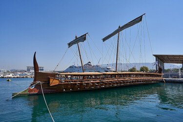
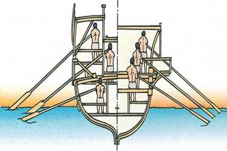
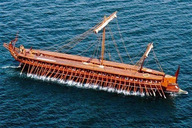

El trirreme (en griego:τριήρης/triếrês) era una nave de guerra inventada hacia el siglo VII a. C. Desarrollado a partir del pentecóntero, era más corto que su predecesor, un barco con una vela, que contaba con tres bancos de remeros superpuestos a distinto nivel en cada flanco, de ahí su nombre.
Los trirremes aparecieron en Jonia y se convirtieron en el buque de guerra dominante en el mar Mediterráneo desde finales del siglo VI hasta el siglo IV a. C. A partir de estas fechas fue desplazado por el quinquerreme, hasta que tras el dominio del Mediterráneo por Roma de nuevo fue utilizado debido a su efectividad por el Imperio romano hasta el siglo IV.2
Carrousel



Hace click debajo si queres escuchar el ruido de remeros griegos en combate: